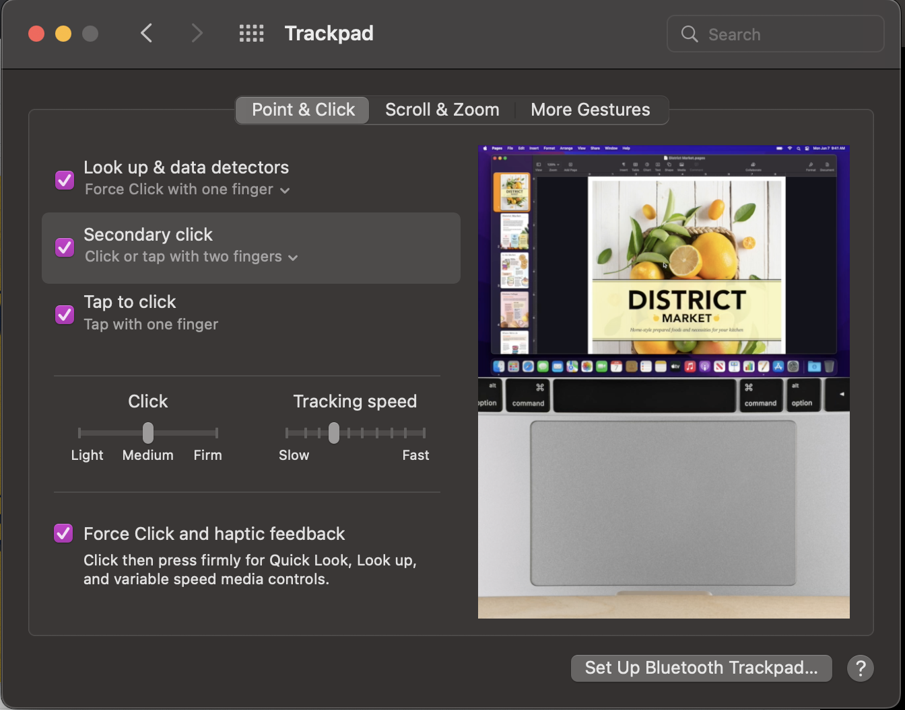
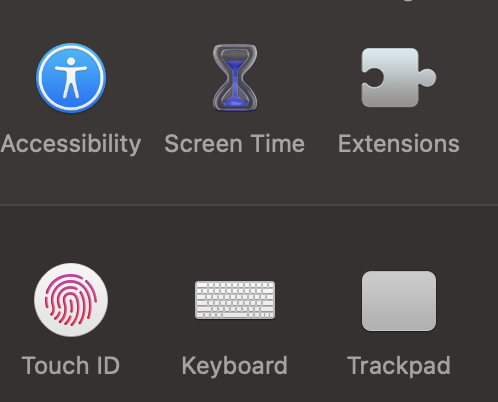
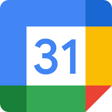

Digital grundkompetens · Minikurs
Datorkunskap
Öppna presentationen: Datorkunskap →
Läs presentationens innehåll i din egen takt, prova övningarna på din dator och avsluta med tio quizfrågor.
Här finns presentationens innehåll och övningar med faktagranskade förtydliganden. Bildnumren hjälper dig att hitta samma avsnitt i bildspelet.
Bild 3
Trackpad / Styrplatta
- Vänsterklick genom vanligt klick på plattan
- Högerklicka genom att trycka ner två fingrar på en gång
- Svep åt höger eller vänster med två fingrar för att gå mellan sidor, om gesten är aktiverad och stöds av webbläsaren.
- Svep med tre eller fyra fingrar åt sidan för att växla mellan skrivbord och appar i helskärm, beroende på inställningarna.
- Svep uppåt med tre eller fyra fingrar för Mission Control: en översikt över öppna fönster och arbetsytor.


Bild 4
Övning
- Öppna Finder och Chrome i vanliga fönster. Växla med CMD + Tab. Svep uppåt med tre eller fyra fingrar för Mission Control, enligt dina styrplatteinställningar.
- Öppna Mission Control och skapa ett extra skrivbord med plusknappen högst upp. Du kan också använda en app i helskärm.
- Testa att svepa mellan arbetsytor med tre eller fyra fingrar, beroende på inställningarna.
Bild 5
Hur organiserar du din drive?
- Skapa mappar i Dokument/Documents och Google Drive
- Hur namnger du dina dokument?
- Titel (som beskriver filen, exempelvis vad uppgiften heter)
- Ämne
- Datum
- Exempel: “Bokrecension Hunger Games 2022”
- Ge dokumentet ett tydligt namn via namn-fältet högst upp. Utgå gärna från dokumentets rubrik.
- När uppgiften kräver det: skapa dokumentet inne i Classroom-uppgiften. Följ lärarens delningsanvisningar och glöm inte att lämna in.
Bild 6
ÖVNING
- Skapa mappar för t.ex. SVE/SVA, TEK1, EN, CAD och Arkiv på datorn och i Google Drive
- Lägg äldre dokument som du vill behålla i mappen Arkiv
- Öppna TEK1-mappen, skapa ett nytt dokument, namnge dokumentet och skriv några rader om en aktuell nyhet.
- Google Dokument sparar automatiskt när du är online. Kontrollera att ändringarna har sparats; offlinearbete måste förberedas.
- Om skolan tillåter det: hämta Google Drive för datorn från Googles officiella webbplats. Skolans administratör kan behöva installera appen. Därefter kan Drive visas i Finder.
Bild 7
skolmail
- Ha koll på din skolmail!
- Logga in med den skoladress och de inloggningsuppgifter du fått av skolan.
- Kopplingen drive - mail - classroom (delat dokument, ny uppgift, kommentarer)
- Filter
Bild 8
Hur fungerar classroom?
- Logga in
- Att gå med i ett nytt klassrum
- Flöde visar klassens meddelanden. Klassuppgifter samlar uppgifter och material.
- Att göra

Bild 9
ÖVNING
- Gå med i TEK1-klassrummet på Classroom antingen genom inbjudan till skolmailen eller via Classroom-kod.
- Gå in på klassuppgifter.
- Öppna uppgiften:
- Skapa ett dokument i uppgiften.
- Skriv tre saker du tycker om.
- Tryck på lämna in.
- Grattis! Du har nu lämnat in din första uppgift på gymnasiet!
Bild 10
Google kalender
- I Google Kalender kan du se sådant som har lagts till och gjorts synligt:
- klassens kalender, om den har delats med dig och är vald i kalenderlistan
- ditt schema, om du eller skolan har lagt in det. Du kan ställa in aviseringar för kalenderhändelser.
- Classroom-uppgifter med sista inlämningsdatum, när klassens kalender visas
- Egna uppgifter i Google Tasks, om funktionen är tillgänglig för ditt konto.

Bild 11
Övning
- Gå in på Google kalender.
- Vad har du hittat?
Bild 12
MAC kort-kommando
- CMD + C för kopiera
- CMD + X för klippa ut
- CMD + V för klistra in
- CMD + N för nytt dokument eller fönster, beroende på app
- CMD + A för markera allt
- CMD + S för att spara i appar som kräver manuell sparning
- CMD + Z för att ångra
- CMD + Shift + Z för att göra om. Vissa appar använder CMD + Y; kontrollera appens meny.
- CMD + Shift + 3 tar hela skärmen, 4 väljer ett område och 5 öppnar skärmbildsverktyget. Håll även Ctrl vid 3 eller 4 för att kopiera bilden till urklipp.
- CMD + tab byta applikation
- CMD + Spacebar söka på datorn (Spotlight)

Bild 13
Övning
- Gå till ditt dokument från classroom i Google i Chrome eller med G drive i Finder
- Öva CMD + A, CMD + C och CMD + V för att kopiera texten till ett nytt dokument. I Google Dokument: skapa först dokumentet via Arkiv → Nytt → Dokument. Ändringarna sparas automatiskt när du är online.
Bild 14
Att söka information
- På Google kan du söka så här:
- Börja med tydliga sökord. Både sökord och frågor kan användas.
- Använd tecken för att precisera sökningen:
- Minus direkt före ett ord utesluter det, exempelvis jaguar -bil.
- Citattecken söker efter ett ord eller en exakt fras.
- Exempel: "förnybar energi".
- Wikipedia kan ge en överblick. Kontrollera viktiga uppgifter mot källorna som anges och andra trovärdiga källor.
Bild 15
Övning
- Gå in på Google.se
- Testa att söka med termer om något som intresserar dig
- Prova att sätta citattecken och se att sökningen blir snävare
- Prova att sätta minus på något ord
Quiz: testa dina kunskaper
Svara på alla tio frågor och tryck på Rätta quizet. Du får återkoppling och länkar till avsnitten du behöver repetera.
Faktagranskning och källor · 15 november 2026
Uppdaterat: styrplattegester, arbetsytor, dokumentnamn, automatisk sparning, Drive-installation, kalenderinnehåll, kortkommandon och sökoperatorer. Originalbilderna visar delvis äldre gränssnitt. Skolans aktuella adress, klasskod och schemakalender behöver du få från läraren.